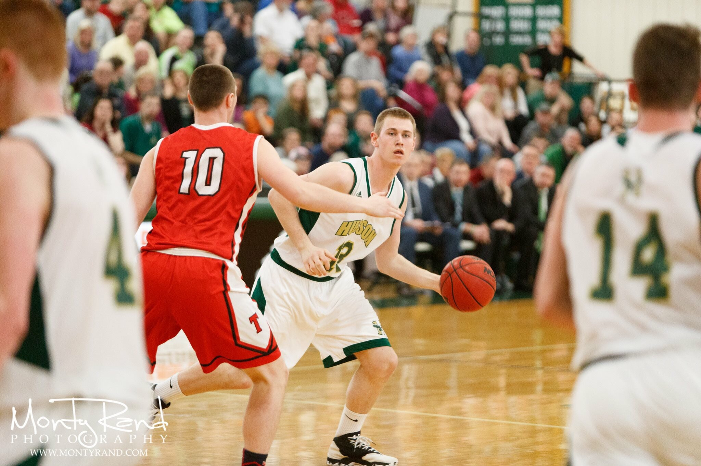

After high school I decided to attend Husson University in the five year Accounting/MBA program. It would allow me to
receive a bachelors degree in accounting and a masters degree in business administration.
Sports
A big factor in my decision to attend Husson was the ability to play college basketball. Playing college basketabll
was always a dream of mine and I was able to fufill it. My freshman season I started 24 of the 28 games and averaged 4
points, 3 rebounds, and 1 assist per game. My freshman year also ended with winning the North Atlantic Conference Championship
and a National Tournament appearance. We ended up losing to Babson College who went on to win the Tournament. I went on to play
13 games the next season before I decided to leave.

University of Maine
In the spring of 2018, I decided to make a life choice by transferring to the University of Maine. My mom works for the
University of Maine System so I had the chance of going to Umaine with half tuition. The hardest part of this decision was
giving up basketball but attending Umaine was too good of an opportunity not take advantage of.